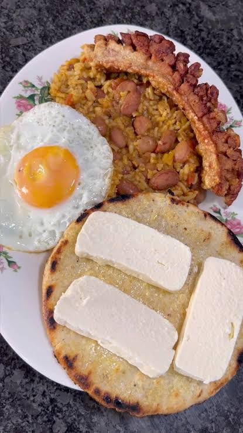

La receta de mi región
El desayuno tradicional por excelencia en los hogares antioqueños.
Consiste en mezclar y recalentar en una
sartén los frijoles y el arroz que quedaron del día anterior, potenciando su sabor.
Se sirve comúnmente con
un huevo frito o revuelto encima, una arepa con queso y una taza de chocolate caliente
Ingredientes
- Frijoles cocidos del día anterior (trasnochados)
- Arroz cocido del día anterior
- Tomate picado y cebolla larga (para el hogao)
- Aceite o mantequilla
- Opcionales: chorizo, chicharrón o plátano maduro
- Acompañamientos: huevo frito, arepa y aguacate
- Chocolate caliente
Preparación
- Se debe cortar finamente la cebolla larga y el tomate para el guiso.
- Haz un hogao cocinando la cebolla y el tomate en una sartén grande con aceite o mantequilla.
- Agrega los frijoles trasnochados al hogao y revuelve durante dos minutos.
- Añade el arroz blanco y los extras (carne o chorizo) mezclando suavemente.
- Cocina a fuego medio-bajo por 5 minutos hasta que evapore la humedad y dore un poco.
- Sirve caliente acompañado de huevo frito, arepa y aguacate.

Ir a Youtube para un tutorial 📺